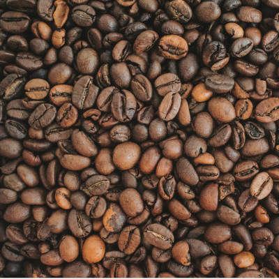
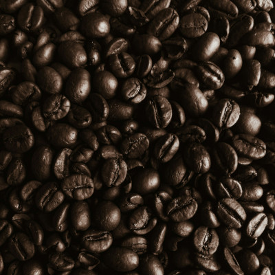
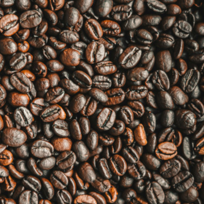
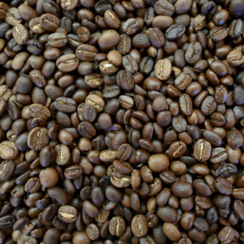
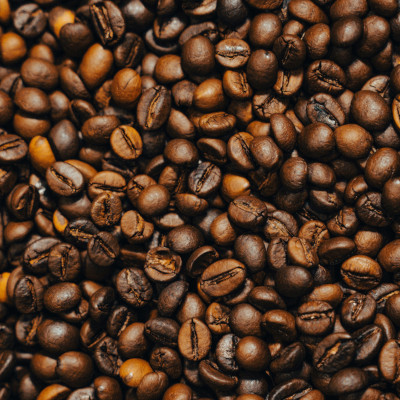
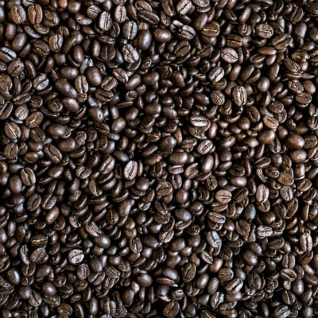

Our Coffee Roasts
-
Sunrise Serenade
- Origin: Ethiopia (Yirgacheffe)
- Roast Level: Light
- Flavor Notes: Citrus, jasmine, honey
- Description: This roast is a bright and floral experience, perfect for those who enjoy a light-bodied coffee with a hint of sweetness. Ideal for pour-over or AeroPress brewing methods, it highlights the naturally fruity characteristics of the Yirgacheffe region.
-
Mountain Ember
- Origin: Colombia (Huila)
- Roast Level: Medium
- Flavor Notes: Caramel, red apple, toasted almond
- Description: A balanced medium roast, Mountain Ember delivers a smooth, sweet cup with subtle nutty undertones. It's versatile, making it a favorite for espresso and drip coffee alike. The Huila region is known for its consistent quality and complex flavor profile.
-
Velvet Night
- Origin: Brazil (Minas Gerais)
- Roast Level: Dark
- Flavor Notes: Dark chocolate, roasted hazelnut, molasses
- Description: Velvet Night is for those who love deep, rich flavors. The dark roast brings out bold, smoky tones with a velvety mouthfeel. Perfect for espresso or French press, this roast delivers a full-bodied experience without overwhelming bitterness.
-
Forest Reverie
- Origin: Guatemala (Huehuetenango)
- Roast Level: Medium-Dark
- Flavor Notes: Brown sugar, cocoa, plum
- Description: This medium-dark roast offers a complex and layered taste, with a sweetness reminiscent of brown sugar and rich cocoa. A hint of fruitiness comes through in the aftertaste, making it an excellent choice for those who prefer a bit of depth and character in their coffee.
-
Wildflower Breeze (Decaf)
- Origin: Mexico (Chiapas)
- Roast Level: Medium
- Flavor Notes: Vanilla, honey, soft spices
- Description: Decaf doesn't mean you have to sacrifice flavor. Wildflower Breeze is a decaf option that delivers a soft and smooth cup with subtle sweetness. The beans are decaffeinated using the Swiss Water Process, ensuring no chemical aftertaste.
-
Dawn Breaker (Seasonal Blend)
- Origin: Ethiopia, Kenya, and Costa Rica
- Roast Level: Light-Medium
- Flavor Notes: Tropical fruits, berry, lavender
- Description: A seasonal favorite, this blend combines the best of three regions to create a vibrant and fruity cup. Light to medium roasted, Dawn Breaker has bright acidity and a complex flavor, perfect for summer mornings or iced coffee.